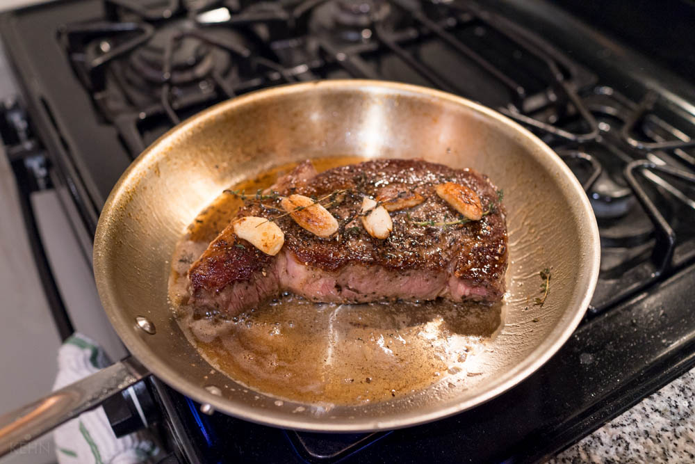

Pan-Seared Steak
Home
This pan-seared steak is a simple yet delicious dish marinated in the fridge for 45 minutes, then quickly pan-seared in a cast iron skillet
before it is finished in the oven. Serve with your favorite sides for a complete meal.

Prep Time: 8 mins
Cook Time: 12 mins
Total Time: 1hr 20 mins
Servings: 2
Ingredients
- 2 (6 ounce) beef top sirloin steaks
- 2 cups orange juice
- 1 cup apple cider vinegar
- ½ cup Worcestershire sauce
- 1 ½ tablespoons steak seasoning (such as Fiesta Brand Uncle Chris'), or to taste
- freshly ground black pepper to taste
- 2 teaspoons olive oil
- sea salt to taste
Instructions
- Place steaks side by side in large casserole dish. Add orange juice, cider vinegar,and Worcestershire
sauce. Marinate, uncovered, in the refrigerator for 45 minutes.
- Preheat the oven to 425 degrees F (220 degrees C). Remove casserole dish from refrigerator.
Cover steaks with plastic wrap and let allow to come to room temperature, at least 15 minutes.
- Place steaks on a clean work surface and generously rub with steak seasoning and black pepper.
- Heat olive oil in a cast-iron skillet over high heat. Cook steaks in the hot skillet until lightly browned on the bottom, 2 ½ minutes.
- Flip and cook until browned on the other side and red in the center, about 2 minutes more. Transfer skillet with the steaks to the oven.
- Bake in the preheated oven until steaks are firm and reddish-pink to lightly pink in the center, 8 to 10 minutes. An instant-read thermometer
inserted into the center should read from 130 degrees F (54 degrees C) to 140 degrees F (60 degrees C).
- Remove steaks from oven; season with salt. Let rest for 5 minutes before serving.
- Enjoy with a side of your choice!
Nutrition Facts (per serving)
calories: 457
Fat: 15g
Carbs: 43g
Protein: 32g